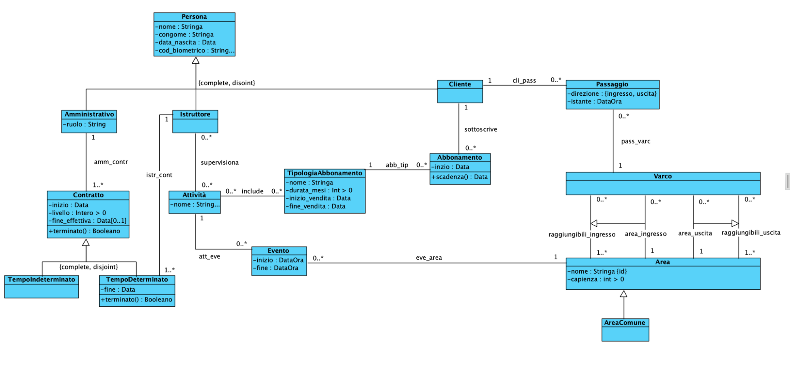

xFit

In questo caso utilizzamo un operazione ricorsiva per calcolarci le aree raggiungibili a partire dalle aree in ingresso/uscita dei varchi. Nel caso non ricorsivo invece, le aree raggiungibili non sono calcolabili, di conseguena devono essere inserite come Dato da chi gestirà sistema (dal management in questo caso).
Proseguirò lo svolgimento di questo progetto utilizzando la soluzione che prevede l’utilizzo dell’operazione ricorciva
// Ogni contratto a tempo indeterminato può terminare per fine naturale (quella prestabilita), o fine effettiva (es. licenziamento), di conseguenza in caso la f.e. sia valorizzata deve essere minore della f.n.
ALL c, fe, fn TempoDeterminato(c) AND fine(c, fn) AND fine_effettiva(c, fe) → fe < fn
// Ritorna true se il contratto è terminato
pre : nessuna
post:
result = true ←→ EXISTS fe [ fine _effettiva(this, fe) AND Adesso >= fe ]
OR
EXISTS fn [ TempoDeterminato(this) AND fine(this,fn) AND fn <= Adesso ]
// La data di fine della vendita di una tipologia di abbonamento deve essere maggiore dell’inizio
ALL t, i, f TipologiaAbbonamento(t) AND inizio_vendita(t, i) AND fine_vendita(t, f) → i < f
// La data di inizio di un abbonamento deve essere maggiore della data di inizio della sua vendita
ALL a, t, i, iv Abbonamento(a) AND TipologiaAbbonamenti(t) AND abb_tip(a, t) AND inzio(a, i) AND inzio_vendita(t, iv) → iv <= i
pre: nessuna
post:
EXISTS i, t, d [ TipologiaAbbonamento(t) AND abb_tip(this, t) AND inizio(this, i) AND
durata_mesi(t, d) ]
il pomeriggio in cui eravamo riusciti
result = i + d mesi
ALL e1, e2, i1, f1, i2, f2 Evento(e1) AND inzio(e1, i1) AND fine(e1,f1) AND eve_area(e1, this) AND
Evento(e2) AND inzio(e2, i2) AND fine(e2,f2) AND eve_area(e2, this) AND
e1 != e2 → f1 < i2 OR f2 < i1
Oppure equivalentemente:
NOT EXISTS e1, e2, i1, f1, i2, f2, t Evento(e1) AND inzio(e1, i1) AND fine(e1,f1) AND eve_area(e1, this)
AND Evento(e2) AND inzio(e2, i2) AND fine(e2,f2) AND eve_area(e2, this) AND e1 != e2 AND DataOra(t) AND
t >= i1 AND t <= f1 AND
t >= i2 AND t <= f2
// Questa operazione ritorna true se dall’Area this è possibile raggiungere l’Area a
// Dall’Area this si raggiunge a se esiste un varco v tale che:
// - v è un varco di uscita da self
// - v è un varco di ingresso per qualche area b
// - b è proprio a (ci siamo arrivati direttamente) oppure da b si raggiunge a (ricorsivamente)
pre: nesuna
post:
result = true ←→ EXISTS v, b Varco(v) Area(b) AND area_uscita(this, v) AND area_ingresso(b, v)
AND [ b = a OR raggiunge(b, a)]
// raggiunge(b, a) sarebbe raggiunge(this, input, output) dove b è il this (cioè l’area su cui viene invocata l’operazione), mentre a è il parametro che prende in input l’operazione, il valore di ritorno è implicitamente true
pre:
inizio > fine
post:
C = { c | Cliente(c) AND and EXISTS p, v, ip, op Passaggio(p) and client_pass(c, p) Varco(v) and
area_ingresso(v, this) and direzione(p, ingresso) and istante(p, ip) and data(ip, d) and ora(ip, op)
and op >= ora_inizio and op <= ora_fine }
result = | C |
Pre: fine >= inizio
Post:
S = { d, n_acc | Data(d) and inizio <= d and d <= fine and
accessi_in_data(this, d, ora_inizio, ora_fine, n_acc) }
Result soddisfa la formula:
min(Result, min ( n_acc ),
(d, n_acc) in S
and
med(result, sum ( n_acc ) / |S| ),
(d, n_acc) in S
and
max(result, max ( n_acc )
(d, n_acc) in S
)
// Questa operazione ci dice quali aree sono raggiungibili passando dal varco this
// Restituisce tutte le aree b tali che esiste un’area a che si raggiunge entrando dal varco this, da cui poi si raggiunge b tramite raggiunge. Usa quindi raggiunge come operazione di supporto per calcolare la chiusura transitiva della raggiungibilità.
pre: nessuna
post:
result = { b | EXISTS a area_ingresso(a, this) AND raggiunge(a, b) }
Pre:
dir = ingresso → [
// abbonamento attivo?
EXISTS a, ia, fa, t, att, svolg, svolg_i, svolg_f, area_svolg, area_v
Abbonamento(a) and sottoscrive(c, a) and
inizio(abb, ia) and fine(abb, fa) and
adesso >= ia and adesso <= fa
and
area_ingresso(v, area_v) and [
AreaComune(area_v)
Or (
// abbonamento include attività che si sta tenendo in un’area raggiungibile da v
and
abbon_tip(a, t) and include(att, t) and
att_svolg(att, svolg) and
inizio(svolg, svolg_i) and fine(svolg, svolg_f) and
adesso >= svolg_i and adesso <= svolg_f and
area_svolg(area_svolg, svolg) and
and aree_raggiungibili(area_v, area_svolg)
)
]
]
post :
Il dominio di interpretazioneve viene esteso con l’elemento ALPHA
Le relazioni che interpretano i simboli di predicato si modificano come segue:
Passaggio(ALPHA)
ecc…
// Data una fascia oraria O (ad es., dalle 17:00 alle 20:00), calcolare per ogni area
A della struttura (ad es., piscina) il numero medio, minimo e massimo (anche se
zero) di clienti che hanno acceduto all’area A nella fascia oraria O nell’ultimo mese
(le statistiche si intendono su base giornaliera).
Result = { (a, min, med, max) | Area(a) and statistiche_accessi(a, oggi - ”30 giorni”, oggi, ora_inizio,
ora_fine, min, med, max)